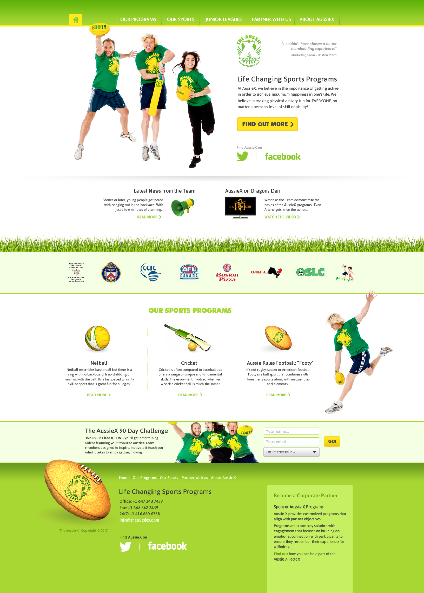

Aussie X is an Australian/Canadian organization which provides a unique sporting experience to young Canadians. Requiring an entirely new web presence, we set about creating a fun, yet professional look, emphasizing the Australian colors of "green and gold" which also portrayed the excitement and energy of the team.
